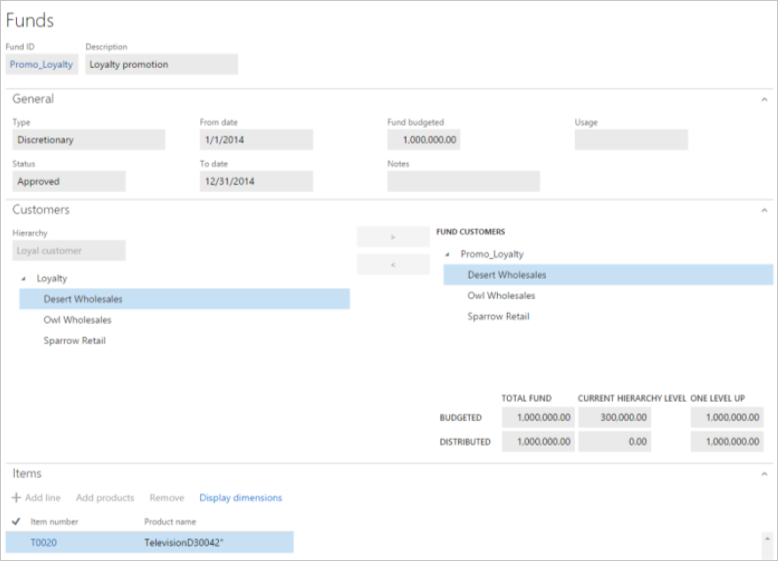

Handelsvergütungsverwaltung
Important
Dynamics 365 for Finance and Operations hat sich zu speziell entwickelten Anwendungen entwickelt, mit denen Sie bestimmte Geschäftsfunktionen verwalten können. Weitere Informationen zu diesen Änderungen finden Sie im Dynamics 365-Lizenzierungshandbuch.
Die Verwaltung von Handelszulagen hilft Unternehmen bei der Verwaltung von Verkaufsförderungsprogrammen, die Kunden, die Volumen- und Verhaltensziele erreichen, „Pay-for-Performance“-Geldbelohnungen anbieten. Die Möglichkeiten der Funktion sind für Unternehmen konzipiert, die sich auf umfassende auf Profit ausgerichtete Aktionen, wie der Budgetierung und Zuteilung von Aktionsmittel oder der Vertragseinstellungen, Anspruchserstellung und -verarbeitung sowie Zahlungsverarbeitung und Aktionseffizienzanalyse konzentrieren.
Dieser Artikel bietet einen breiten Überblick der Handelsvergütungsverwaltungsfunktion und macht Sie mit den üblichen Aufgaben vertraut, die bei der Verwaltung eines Verkaufsförderungsprogramms benötigt werden. Eine Reihe von Benutzern mit Betriebs- und Entscheidungspflichten sollen diese Funktionen nutzen, um ihre jeweiligen Ziele zu erreichen:
- Den ausgewählten Firmen frei verfügbare Mittel zum Einrichten von Handelsvergütungsverträgen für Aktionen auf Grundlage von Rückverrechnung und einmaligen Pauschalzahlungen (für eine vereinbarte Dienstleistung) zuweisen
- Die ausgehandelten Aktionsverträge im laufenden Vertrieb ausführen und Rückverrechnungsansprüche erstellen
- Berechnen, Genehmigen und Verarbeiten der generierten Ansprüche, und Weiterleitung als Abzüge für Zahlungsausgleich an Debitoren
- Abstimmen des Kundenkurzlohns mit dem fälligen Abzug
- Nachverfolgung der Aktionsmittel und Bewertung der Programmrentabilität und -effizienz
Zielgruppe und Zweck
Die Informationen in diesem Dokument sind für geschäftliche Entscheidungsträger in Unternehmen bestimmt, in Positionen wie Einkaufsleiter, Leiter der Finanzabteilung und Buchhaltungsleiter, die für Folgendes verantwortlich sind:
- Allgemeine Budget- und Mittelzuweisung
- Planung und Analysieren der Verkaufsförderungen
- Verwalten von Mitarbeitern, die Rückverrechnungsansprüche auf Grundlage von Merchandising-Ereignissen verarbeiten und Kurzlohn sowie Abzüge abrechnen
Personen in diesen Rollen suchen nach Möglichkeiten, diese Ziele zu erreichen:
- Verbessern Sie Ihre Verwendung von verkaufsfördernden Mitteln.
- Flexibel verschiedene Typen von Verkaufsförderungskampagnen sowie Vergütungen berücksichtigen.
- Reduzieren der Verwaltungsbelastung und von Fehlern, die mit dem Überwachen der Wirkung verkaufsfördernder Maßnahmen und dem Bearbeiten von Forderungen zusammenhängen.
- Verbessern von Cashflowplanungen durch das Antizipieren zukünftiger Verbindlichkeiten.
- Arbeiten mit einer quantifizierten Basis für laufende und zukünftige Verhandlungen mit Kunden über verkaufsfördernde Maßnahmen.
Mittel- und Handelsvergütungsvertrag für Aktionen
Ein Handelsvergütungsvertrag ist ein Anreizprogramm, bei dem Kunden, die bestimmte Mengen- und oder Verhaltensziele erreichen leistungsbezogene finanzielle Belohnungen angeboten werden. Verkaufsfördernde Mittel sind budgetierte Aufwendungen. Auf diese Weise können die Aktionskampagnen erfasst werden.
Verkaufsfördernde Mittel
Mittel, die dem Durchschnitt, die den Handelsvergütungsverträgen zugewiesen sind, werden auf der Seite Geldmittel erfasst. Um die Seite Geldmittel zu öffnen, wählen Sie Vertrieb und Marketing > Handelsvergütungen > Geldmittel > Geldmittel aus.

Auf der Seite Geldmittel können Sie die Details der verkaufsfördernden Mittel anzeigen.
Das Inforegister Allgemeines enthält den Zeitraum, für den die Mittel gültig sind und zeigt den Budgetbetrag an. Damit vom die Mittel der Aktionsvereinbarung zugeordnet werden, muss das Feld Status den Wert Genehmigt aufweisen.
Das Inforegister Debitoren zeigt die Debitorenhierarchie an. Um die Debitoren auszuwählen, die Ziel der Mittel sind, ziehen Sie sie unter Mitteldebitoren. Dieses Inforegister zeigt auch, wie der Gesamtbetrag der Mittel verteilt wird.
Das Inforegister Artikel zeigt die Artikel, die an der Aktion beteiligt sind.
Handelsvergütungsvertrag
Nachdem die Mitteldefinition durchgeführt wurde, werden im nächsten Schritt der Aktionsplanung die Aktionskontakte registriert, (die als Handelsvergütungsverträge bezeichnet werden), Mittel zugewiesen und Leistungsziele für jedes Verkaufsereignis definiert.
Handelsvergütungsverträge werden auf der Seite Handelsvergütungsverträge erfasst. Um die Seite Handelsvergütungsverträge zu öffnen, wählen Sie Vertrieb und Marketing > Händlervergütung > Handelsvergütungsverträge aus.

Header
Wählen Sie Kopfzeile aus, um in die Kopfzeilenansicht zu wechseln.
Auf dem Inforegister Allgemeines definieren die Felder Auftrag an und Auftrag von den Geltungszeitraum des Vertrags. Der Genehmigungsstatus Intern genehmigt bei der Vereinbarung gibt an, dass die Vereinbarung noch nicht gültig ist und nicht während der Auftragsverarbeitung angewendet werden kann.
Der Abschnitt Analyse des Inforegisters Allgemeines enthält wichtige Felder, die die Mengen und Kosten definieren, die für die Bewertung der Aktion verwendet werden:
- Das Feld Basiseinheiten gibt die Menge der Produkte an, die an ausgewählte Debitoren verkauft werden müssen, bevor die Aktion angewendet wird.
- Der Wert Berechnete Liefermenge wird basierend auf dem Wert Zuwachs in Prozent berechnet, der eine geplante Zielerhöhung für diese Aktion ist.
- Das Feld Handelsvergütungskosten wird basierend auf den Mengen der verschiedenen Ereignisse im Handelsvergütungsvertrag berechnet.
Im Inforegister Debitoren in der linken Liste können Sie Debitorengruppen anzeigen und auswählen, die als vordefinierte Hierarchien eingerichtet werden. Sie können dann die gesamte Hierarchie oder bestimmte Konten als Ziele für den Vergütungsvertrag auswählen.
Im Inforegister Artikel sowie im Inforegister Artikel der Seite Geldmittel werden Produkte der Vereinbarung hinzugefügt, damit dessen Vertrieb der vereinbarten Zulage zugeordnet wird.
Auf dem Inforegister Geldmittel werden die verkaufsfördernden Mittel angezeigt, die dieser Vereinbarung zugeordnet sind. Sie können auch die Ereigniskostenzuweisung der Vereinbarung anzeigen. Eine Ereigniskostenzuweisung von 100 Prozent bedeutet, dass diese Aktion ausschließlich aus einem Mittel finanziert wird. Alternativ kann auch eine Aktionsvereinbarung auch aus mehreren Mitteln finanziert werden und den gleichen oder einen differenziellen Zuweisungsprozentsatz verwenden.
Positionen
Danach wählen Sie Positionen aus, um zur Positionsansicht zu wechseln.
Die Registerkarte Verkaufereignisse enthält die Ereignistypen, die durch von einer Vereinbarung abgedeckt werden. Es gibt drei Typen: Rückverrechnung, Pauschalbetrag und rechnungsbasiert.
Wenn Sie das Verkaufsereignis auswählen und dann auf die Registerkarte Beträge auswählen, werden die Details für das Ereignis angezeigt.
Im Abschnitt Handelsvergütungspositionen geben Sie die Mengen- oder Betragsbereiche an, die der Debitor als Definition erreichen muss, um die Belohnungen zu erhalten.
Im Falle eines Merchandisingereignisses vom Typ Rückverrechnung, definiert der obere Abschnitt der Registerkarte Beträge die Regeln zur Anwendung, Erstellung und Zahlung der Rückverrechnung. So geben die Regeln möglicherweise die folgenden Bedingungen für den Rückverrechnungsanspruch an:
- Er basiert auf dem Erstellungsdatum des Auftrags (der Wert vom Typ des Berechnungsdatums lautet Erstellt).
- Er wird auf Grundlage des Betrags der Auftragsposition vor Rabatten berechnet, nicht auf dem Nettobetrag, der Rabatte enthält ( der Wert für Zahlungsbasis lautet Brutto).
- Er basiert auf der Menge der verkauften Produkte, nicht dem Betrag ( der Wert für Zeilenumbruchtyp für Rückvergütung lautet Menge).
- Er wird pro Monatsperiode berechnet ( der Wert für Verkäufe kumulieren nach lautet Monat).
- Er wird als ein Abzug ausgeglichen, nicht mit dem Kreditorenkonto (der Wert für Zahlungstyp lautet Debitorenabzüge).
Im Falle eines Merchandisingereignisses vom Typ Pauschalbetrag zeigt die Registerkarte Beträge den Betrag, der dem Debitor in Form eines Abzug gezahlt wird, wenn der Debitor eine bestimmte Leistung erreicht. Ein Genehmigungsstatus von Offen gibt an, dass der Pauschalbetrag noch nicht bezahlt wurde.
Um die Vereinbarung auf Auftrage anzuwenden, die die Bedingungen in der Vereinbarung erfüllen, muss der Vereinbarungsstatus Bestätigt lauten.
Verkäufe unter dem geplanten Merchandisingereignis durchführen und Rückverrechnungsansprüche erstellen
Wenn Sie einen Auftrag erstellen, der Positionen aufweist, die den Anforderungen der Vereinbarung entsprechen, können Sie die zugehörigen Informationen auf der Seite Auftrag anzeigen, indem Sie Auftragsposition > Ansicht > Preisdetails auswählen.
Auf der Seite Preisdetails im Inforegister Rückvergütungen kann der Vertriebssekretär eine Rückverrechnung des gültigen Handelsvergütungsvertrags anzeigen (der Rückvergütungsprogrammkennung wird angezeigt) und der Gesamtbetrag wird auf die Position angewendet. Dieser Betrag wird auch im Feld Rabattmenge im Abschnitt Gewinnspannenvorkalkulation der Seite Preisdetails angezeigt.
Wenn die Verkaufsrechnung gebucht wird, wird ein entsprechender Rückverrechnungsanspruch für jede Rechnungsposition generiert.
Note
Um die Seite Preisdetails anzuzeigen, aktivieren Sie auf der Seite Debitorenparameter auf der Registerkarte Preise das Kontrollkästchen Preisdetails aktivieren. I
Ansprüche verarbeiten und als Abzüge an Debitoren übergeben
In den nächsten Schritte im Prozess für den Umgang mit Rückverrechnungen werden Ansprüche überprüft, berechnet, genehmigt und dann in Abzüge konvertiert.
In der Rückverrechnungsworkbench überprüft und verarbeitet der Inhaber einer Aktionsvereinbarung regelmäßig die generierten Ansprüche. Dort konvertiert der Debitoren-Administrator auch die genehmigten Ansprüche in Abzüge oder regelmäßige Zahlungen, abhängig von der Zahlungsmethode für den Anspruch.
Auf der Seite Rückverrechnungsworkbench können Sie die Anspruchspositionen prüfen. Wenn die Ansprüche den Status Erneute Berechnung erforderlich aufweisen, müssen sie für jeden kumulativen Effekt neu berechnet werden.
Ansprüche neu berechnen
Um die Ansprüche neu zu berechnen, wählen Sie im Aktivitätsbereich Kumulieren aus. Im Dialogfeld Rückvergütungen kumulieren wählen Sie dann den entsprechenden Debitor aus.
Als Ergebnis der Neuberechnung generiert das Programm neue Ansprüche für die Beträge, um die ursprünglichen Ansprüche auf den qualifizierenden Betrag pro Einheit anzupassen. Ein Regulierungsanspruch wird für jede eindeutige Kombination eines Debitors, eines Artikels, einer Währung, einer Maßeinheit, den Lagerungsdimensionen, den Finanzdimensionen und einer Mehrwertsteuergruppe generiert. Diese Regulierungsansprüche weisen dieselbe Referenz auf den Auftrag und die Rechnungsnummer auf wie die Ansprüche, die reguliert werden (das heißt, die Ansprüche, die ursprünglich aus dem Verkaufsdokument erstellt wurden). Im Gegensatz zum ursprünglichen Anspruch hat der Regulierungsanspruch keine Werte in den Feldern, die die Beträge und Menge der Originalauftragsposition beschreiben.
Nachdem die Neuberechnung abgeschlossen wurde, wird der Status der Ansprüche auf Berechnet geändert. Um die Ansprüche zu genehmigen, wählen Sie im Aktivitätsbereich Genehmigen aus.
Ansprüche verarbeiten und an Debitoren weiterleiten
Die Ansprüche sind jetzt zur Verarbeitung durch Debitoren bereit. Um sie zu verarbeiten, klicken sie in den Aktivitätsbereich und wählen Sie Verarbeiten aus.
Nach der Verarbeitung der Ansprüche wurde der Status auf Markieren geändert und gibt an, dass eine Erfassungsbuchung (die gebuchte Erfassung ist die Rückvergütungs-Abgrenzungserfassung, wie in den Deb.-Parametern angegeben) folgende Ereignisse zur Folge hat:
- Die Ansprüche wurden als Abzug zum temporären Debitorensaldo übertragen.
- Die Rückvergütungs-Abgrenzungserfassung wurde gutgeschrieben, um die zukünftigen Verbindlichkeiten für den Debitor darzustellen.
- Das ist Nachlassausgabenkonto wurde belastet, um die Kosten darzustellen, die in Verbindung mit dem Verkauf angefallen sind.
Für den Abschluss des Prozesses muss der Deb.-Sekretär die Abgrenzungsabzüge handhaben, indem er sie als Gutschrift (Verbindlichkeiten ) an das Guthaben des Debitors überträgt.
Um die Aufgabe zu beginnen, wählen Sie im Aktivitätsbereich auf der Seite Debitor die Option Mahnen > Ausgleichen von Buchungen aus. Wählen Sie auf der Seite Buchungen ausgleichen die Optionen Funktionen > Rückverrechnungsprogramm aus. Diese Nachlassseite zeigt alle Rückbelastungsansprüche, die zuvor verarbeitet wurden.
Wenn Sie eine Gutschrift erstellen möchten, aktivieren Sie das Kontrollkästchen Markieren für alle Positionen, und wählen Sie anschließend Funktionen > Gutschrift erstellen aus.
Nach Erstellung einer Gutschrift wird eine Erfassung gebucht. (Die Erfassung, die wie in den Debitoren-Parametern angegeben als Debitoren-Verbrauchserfassung gebucht wird.) Als Ergebnis wurde der tatsächliche Betrag der Verbindlichkeiten (Haben) zum Debitorensaldo zurücküberstellt. Finanziell bedeutet diese Situation, dass die folgenden Ereignisse aufgetreten sind:
- Eine Gutschrift auf das Debitorenkonto des Debitors ist erfolgt.
- Das Nachlassabgrenzungskonto wurde belastet.
Um ein Merchandisingereignis vom Typ Pauschalbetrag zu genehmigen, wählen Sie das Ereignis auf der Seite Handelsvergütungsverträge aus, und wählen Sie dann auf der Registerkarte Betrag die Option Genehmigen aus.
Gleichen Sie den fälligen Abzug und den Debitorenkurzlohn mit der Abzugsworkbench aus
Häufig wählen Kunden in Erwartung der Rückverrechnung die ausgewählten Kurzlohnrechnungen aus. Um zukünftig Zahlungsabstimmungsprobleme zu verhindern, erfasst der Deb.-Sekretär die Kurzlöhne als Abzüge, wenn die tatsächlichen Debitorenzahlungen erfasst werden. Dann werden diese Debitorenabzüge auf der Abzugsworkbench problemlos mit den Anspruchsbeträgen ausgeglichen werden, die vom Unternehmen fällig sind.
Um den Kurzlohn eines Debitors in der Zahlungserfassung zu erfassen, wählen Sie Debitoren > Zahlungen > Zahlungserfassung aus, und erstellen Sie eine Zahlungserfassung. Wählen Sie dann im Aktivitätsbereich Abzüge aus. Auf der Seite Abzug können Sie den Kurzlohnbetrag erstellen und verfolgen.
Der Inkassomanager ist nun für den gegenseitigen Ausgleich der offenen Gutschrifttransaktion und der Kurzlohntransaktion in der Abzugsworkbench zuständig.
Um Abzüge zu verwalten, wählen Sie Vertrieb und Marketing > Handelsvergütungen > Abzüge > Abzugsworkbench aus. Der obere Bereich der Seite enthält Positionen, die Kurzlöhne vom Debitor angeben. Der untere Bereich der Seite enthält die offenen Kreditbuchungen des Debitors.
Um den Abzug mit der offenen Transaktion auszugleichen, markieren Sie die Abzugsposition und markieren die Position dann auf der Registerkarte "Offenen Posten". Klicken Sie im Aktivitätsbereich auf "Verwalten" > "Abgleichen".
Der Status der ursprünglichen Ansprüche wird nun auf Abgeschlossen festgelegt.
Die Effizienz der Aktion und die verbrauchten Mittel analysieren
Um einen Überblick der entscheidenden Statistiken des Programms und der Mittelverwendung zu erhalten, können Sie mehrere Berichte und analytische Ansichten verwenden, die im der Handelsvergütungsverwaltung verfügbar sind.
Auf der Seite Handelsvergütungsaktivität werden in der Registerkarte Überblick die Hauptdetails des Handelsvergütungsvertrags angezeigt. Die anderen Registerkarten zeigen spezifische Details zu den zugeordneten Dokumenten, Zahlungen und anderen Ereignissen, die sich auf das Programm beziehen.
Die Registerkarte Zusammenfassung enthält die Gesamtproduktmenge, die mit der Aktion verkauft wurde, den Umsatzbetrag, der fakturiert wurde, und die Rückverrechnungen sowie die Pauschalbeträge, die gezahlt wurden.
Die Registerkarte Rückverrechnungsgutschriften enthält die Details einzelner Rückverrechnungen, die dem Debitor gutgeschrieben wurden.
Um einen analytischeren Überblick über die verschiedenen Leistungskennzahlen für die Aktion abzurufen, können Sie die Analyseansicht verwenden. Um zur Analyseansicht zu wechseln, klicken Sie auf Vertrieb und Marketing > Händlervergütungen > Handelsvergütungsverträge Klicken Sie im Aktivitätsbereich auf Analyse.
Um einen analytischeren Überblick über die verschiedenen Leistungskennzahlen für die Aktion abzurufen, können Sie die Analyseansicht verwenden. Um zur Analyseansicht zu wechseln, klicken Sie auf Vertrieb und Marketing > Händlervergütungen > Handelsvergütungsverträge Klicken Sie im Aktivitätsbereich auf Analyse.